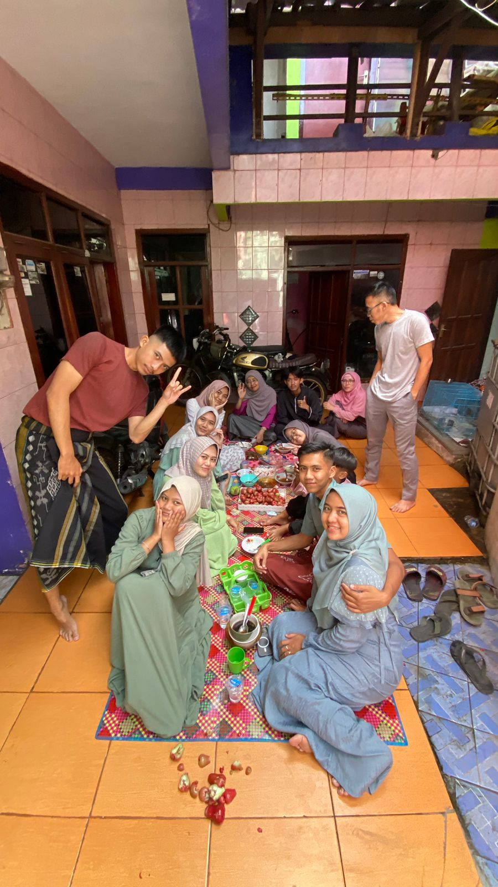

Haloo, nama aku Fathan dipanggil, pasti nyaut kok :v disini saya akan menceritakan tentang lebaran dan liburan. Sebelumnya... kalian tim manaa nih? lebaran sabtu atau jumat? atau ga ikut lebaran?? Kalo akuu sih lebaran hari sabtu. Di hari sabtu ituu, seperti pada umumnya.. aku bangun shubuh dan sholat, kemudian aku baca Al-quran dan main hp sebentar setelah itu lanjut mandi dan siap siap untuk sholat idul fitri. Aku pergi sholat dengan om aku pake motor dan yaa sampe di sana aku sholat, denger khutbah dan pulang kembali ke rumah. Sampe dirumah aku salam salaman minta maaf dengan keluarga, mulai dari kakek nenek, orang tua dan semua saudara yang lain. Setelah salam salaman dan maaf maafan selesai, keluargaku bagi-bagi thr, alhamdulillah aku masih dapet, meskipun ga sebanyak duluu :( setelah itu, kita makan makan bersama, salah satu keluargaku ada yang menyediakan mie kocok bandung, yang lain juga ada puding dan salad.Yaaa saat itu aku ikut makan dan ngobrol bersama tentang banyak hal. Seneng banget soalnya jarang kumpul bersama keluarga besar. Setelah kenyang maka selesailah perkumpulan itu dan lanjut foto foto.
Setelah itu aku lanjut ke Soreang untuk mengunjungi keluarga ayah. Aktivitas disana tidak jauh beda, aku datang disana jam 12 an, sorenyaa... aku main dengan adik sepupu dan keponokan hingga menuju maghrib. aku menginap disana 1 hari dan minggu sore pulang. di hari Minggu itu kita pergi ke sawah dan makan makan disana, sawahnya deket sungai jadi bisa sekalian main air juga disana. Setelah selesai tentu kembali ke rumah. Sampe dirumah aku pun istirahat dan sholat, sekita jam 2-3 aku pulang kembali ke bandung, tapi mampir dulu ke kings. Di kings kita jajan tipis tipis lalu pulang dan sampe rimah sekitar jam 17.30